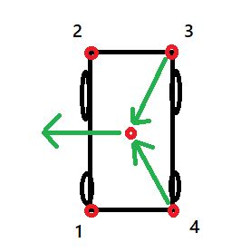
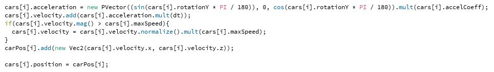
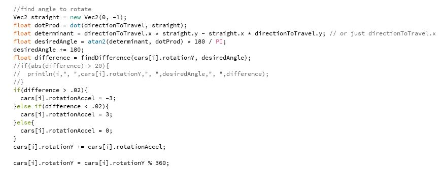
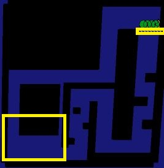
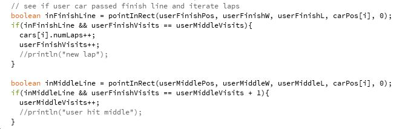
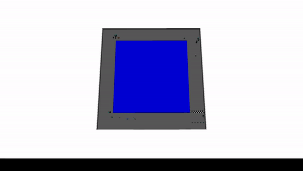
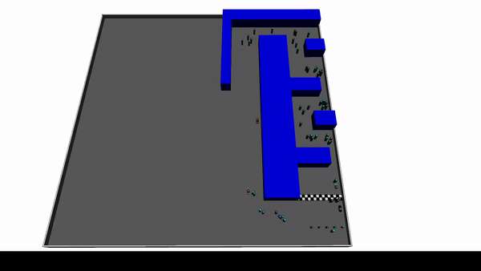

This racing simulator combines many of the techniques we learned throughout the course. It combines collision detection, rectangular bounding boxes, normal and rotational acceleration, and path planning to build a car racing environment. As seen above, the user races, using the WASD keys, against AI cars that are driven by a PRM built with Uniform Cost Search path planning techniques. The first car to achieve three completed laps wins. There is a GUI that displays the time of the user's car, the number of laps completed, and a map of the track and all of the cars on it, with the user indicated with a yellow star. To play the game, open one of the files in the folder with the code in Processing and press the run button with any of the files open. It will take a few seconds to load because generating the AI paths is time consuming.
The track is built with processing's built-in rectangles and boxes, while the cars are sourced from the Google Drive of free models. Each car has a different acceleration, max speed, width, and length. The collisions between the cars and walls are a scaled-back version of the rigid body activity in class. It does not adjust any rotational aspects of the car's motion, only the position and velocity. The PRM model was built with the same framework as the one from project 1, utilizing a priority-queue frontier that searches all possible paths until it's empty. The motion and collisions are all built in 2D, with the simulation being rendered in 3D.
The racer must press the space bar after the game loads to start it. After the user finishes the third lap, they can keep racing around the track as much as they would like, but the game is effectively "over". The AI cars will continue to race even after the game ends, as they are looping around the track along their PRM-generated path. There is a shortcut that can be seen on the map that the AI cars can not take. This gives the user the ability to win the race even if they have the slowest car in the game. The wall collisions are very bouncey and the shortcut is very narrow, so the user must hit the shortcut perfectly to gain an advantage.
As mentioned earlier, the racing game is built using a combination of different topics discussed in class. Many of the techniques are modified to be either simpler or computationally faster, almost in a hacky way.
The game is driven by both car-to-car and car-to-wall collisions. While both are driven by rectangular bounding box logic, there collisions are generated in different ways. The initial collision checking was done by seeing if any of the four lines generated by the four corners of each car intersected any of the four lines generated by the four corners of each obstacle. If there was an intersection of the lines, the collision checking method would return the index of the obstacle or car that the car currently being checked collided with, and the car was "bounced" off of the object by subtracting the positions. This didn't seem very natural, as the bounce after hitting a wall depended on the center of the wall object, rather than the angle of the car with respect to the wall's normal. This technique is still in use for determining the collisions between cars since it doesn't appear glitchy or unnatural.
The collisions between the walls and the cars are now determined by looking at the four corners of each car and seeing if they are inside any of the wall objects. If so, the car is bounced off based on which corners were inside the wall.
As seen in the picture above, with nodes 3 or 4 colliding with the wall the car's velocity would be set to the normal of the opposite face of the car. This was a large upgrade from the previous method of collision resolution because the car bounces sideways, not backwards awkwardly. Ideally, rigid bodies would resolve collisions the best, but rotational motion was not factored into the collisions and the math behind rigid body collisions of two moving objects with rotation seemed like a steep mountain to implement that wasn't necessary. The current adaptation works decently well and does not cause cars to get stuck on walls.
The AI cars move based on pathways that are generated from a Probabilistic Roadmap (PRM) implementation. The PRM builds this pathway by generating 500 random nodes on the map, connecting these nodes, then finding a path through the connections from designated start and end positions. The start positions of the paths are the cars' starting positions before the race begins, and the end point is 30 Processing Units behind the inside-most car. There is an invisible obstacle between the start and end positions so that the PRM does not simply build a straight line from start to end. The 500 randomly generated nodes are generated in a way so they are not inside any wall obstacles. Once the nodes are all connected, the PRM builds a priority queue of all the nodes that can see the starting position. The priority queue then checks each node individually, ordered by lowest distance from the start, seeing if it can reach the goal position and adding the node's neighbors if it can't. Once the priority queue finds a node that can access the goal position, it will see if the connected path of neighbors is the shortest goal path found. The priority queue will remove any nodes that have a distance that is larger than the found goal distance to save runtime. At the end, the shortest found path is a string of nodes that represent the path from start to finish for that car.
In car movement, the AI cars move from node-to-node, keeping track of which node is next on their list to visit. There is path smoothing implemented, that allows the car to move past the desired node once it can see the node after it on the path. Once the cars get to the last node in the path, the path resets to target the first node in the path. It's at this point that the car "completed" a lap.
Each car's movement is determined by its physics and rotational physics. Rotational acceleration and normal acceleration determine their respective velocities, and these determine their respective position updates. The car rotates toward the position of the next desired node. See the code snippit below to see the calculations that determine the movement. Velocity is preserved from timestep to timestep and is influenced by an acceleration vector that is generated based on the current rotation of the car.
The user controlls the car with the WASD keys. The car can only rotate if W or S is down. When A or D is down, the rotational aceleration is set to a nonzero number to match which direction the car is to rotate. The AI cars rotation is determined by the algorithm shown below, found on a StackExchange post. This was a large issue in developing the AI car movement, as they kept rotating the wrong way for different desired angles. This was solved by adding 180 to the desired angle then setting the angle equal to the modulus of the angle at the end.
The user can only complete a lap after their car has passed the starting line AND been inside a zone on the opposite side of the map. This is to keep users from cheating the game and doing circles at the starting line to gain laps. See the images below for a map view of the two zones, as well as the code that controlls lap incrementation for the user's car.
 This game obviously isn't an original idea. It was initially targeted to be based off of Mario Kart, but designing a full Mario Kart map would take months to create and perfect. Implementing item boxes presents a similar challenge that entails much more details and issues than imagined. The reason this game idea was chosen was that it used so many topics from class, as explained in section II, and combined them into a working simulation that is often seen in the video game industry.
The AI cars use paths that are generated at the start of the program. This is done because the algorithm itself takes a while to generate each pathway. However, it was first imagined that the cars would change their paths in real time, generating a new path to traverse every few timesteps. This would've been a simpler version of Sigurdson and Bulitko's state-of-the-art tehcnique of using deep learning to choose which real-time path planning algorithm works best in certain situations. Utilizing a version of this would allow the AI cars to plan different pathways with different lengths when they were in different circumstances within the game. This wouldn't be realistic to implement unless the network was already learned with test data and results before the simulation began.
The gameplay with designed with 2D movement because it makes all the small parts of the simulation--path planning, collisions, model placement--infinitely less complicated and cumbersome. The simulation focused on tuning car movement and interraction, keeping the cars in a plain enviornment with good visibility and navigability.
I started with building the basic layout of the map. Then I put one large obstacle in the middle and tried to get the PRM system working for the AI cars. Below is a gif of the progress from that phase of the project.
 Initially the car movement was not based on normal physics. There was no rotational acceleration or positional acceleration, and the car movement didn't look realistic. After implementing the current physics and changing the size of the car models, I began to construct the current course. Building the maze with wall objects was not difficult but was time consuming. It was guess and check for every object. I expected to be able to add more creativity into the walls, adding textures and models instead of plain blue walls, but I ran into the issue of adding pictures into the simulation. I could not get anything to load properly, so I decided to focus my efforts on implementing collisions.
Part of determining AI movememnt was figuring out the angles and rotational motion of the cars. One of the most difficult parts of the project was finding out the logic behind the desired Angle and findDifference function. It was a headache trying to figure out which angles and offsets were needed to make it work, and was incredibly satisfying when it finally worked.
Collisions were the hardest and most time consuming part of the project. I looked online at different methods for implementing bounding box collisions, and found the line intersection idea that was outlined in Section II. This method was effective in determining that there was a collision, but it didn't give me enough information to resolve the collision in a graceful way. I then thought of a second way of detecting collisions that would provide more information about what direction to move the car in. Since the cars are boxes, the only way they collide with a wall is if one of the four corners of the rectangle goes inside one of the walls. I used this to create a PointInBox approach to detecting wall-car collisions, returning the integer of the corner that is colliding with the wall. Having this information, the direction of collision resolution can be found because it will be opposite of the side that the colliding corner was on. This can also be seen in the image in Section II.
After implementing collisions, I built the GUI and positioned the camera behind the user's car and facing the car. This was the last large major part of the simulation, and again was mostly guess-and-check work. Getting the GUI to face the car was the most difficult aspect, finding out how much to rotate and when to rotate, translate, and use the hint() function. The GUI is strange because if the camera was in any other spot, you could see the GUI moving with the car in space. It is not glued to the user's screen, but floating above the car somewhere in space. The final form of the game can be seen from the video in Section I or by playing it in processing.
The peer feedback was insightful but didn't impact much of the development of my project. I wasn't able to attend class for the Proposal Discussion and paper sharing, so I didn't get much initial feedback on my idea. However, with the people who I talked with before starting the final project, they had the concern that my project would be too much work in a short amount of time. I took this into account and started development very early, knocking out the harder parts of the project weeks before it was due.
The Progress Report feedback was very helpful because it gave me five different prospectives on my project's gameplay. They suggested that I make the AI cars faster and harder to beat because my progress video showed how easy it was to beat them. I implemented different speeds for different cars and the competition is much better now. Another piece of advice my peers had was making the track 3D. This would take lots of reconfiguring of different aspects of car movement and would overcomplicate collision detection, so I decided to keep the track in 2D.
Another large part of the peer feedback that drove my final implementation was the idea to make a map of the game on the GUI. I initially thought this would be vert hard, but it ended up being relatively easy because it's just a smaller version of the actual track itself with the car positions mapped inside of it. This provided a clean look and better racing experience, bringing it closer to actual Mario Kart gameplay.
There has been much recent development and research done on some of the techniques used in the project. As mentioned earlier, Sigurdson and Bultiko looked into using machine learning and deep learning to train a network that uses different heuristics in different scenarios in real-time path planning. In development of my project, I initially wanted to use real-time path planning, changing the paths of each AI car based on where their position was, but the time it took for Uniform Cost Search to find the shortest path was too large to implement it in real-time. I could've had a more local approach, finding a partial solution path at each timestep, but determining a heuristic that keeps the cars on the correct path was too difficult to implement with the complicated obstacle course. Another approach I could've used was developed by Dubey, Sohn, Thrash, Hoelscher, and Kapadia by using hierarchical decision models to map indoor landmarks that a robot needs to navigate around. Using a version of particle shooting, I could've potentially built a hierarchical structure for the AI cars to navigate inside of, building a local path in the direction of the open space.
One part of Mario Kart that makes the opponent CPUs fun to play against is the differences in their gameplay. Some try to bump others as much as they can, some race as fast as they can, and some go for the most item boxes. While this was not implemented in my project, it could be a future extension of my project. Shergadwala, Teng, and Seif El-Nasr looked at building player models based on player data, building different types of players based on how their interract with the game. Using this idea in the future, different CPU types could be built based on player data--number of collisions, number of items, average speed, average place--to make the simulation more competitive and similar to Mario Kart.
There are many ways my project can be extended in the future. These improvements require improved techniques that would take more development time to implement. First of all, the collisions in the simulation could be improved to reflect rigid body collision resolution. This would require more math per collision, potentially slowing down the simulation, but providing a more realistic trajectory for the car after bouncing. Another improvement for the simulation could be adding a 3D aspect into the car motion. This could be done by adding in a third dimension to the cars' physics, as well as altering the course to have jumps and other 3D components. As mentioned earlier, this would add a lot of complication into the collisions between cars and obstacles, especially if the track was improved to have non-rectangular objects and terrains. Cars are not perfect rectangles, and in the 3D work modeling collisions with a perfect rectangle wouldn't look ideal for resolving aerial collisions.
Additionally, there are many elements of Mario Kart that could add increased appeal to the gameplay. Creating a themed course with textured walls, lighting, and moving obstacles would add a sense of coolness. That could include adding in particle systems, fire, fluid systems, and sound effects. Another idea, as mentioned earlier, is creating item boxes that give the cars items to throw forward or backward. This would include developing item movement and interraction with the opposing cars, which would take a long time to deveop.
Bhaumik, D., Khalifa, A., Green, M., & Togelius, J. (2020). Tree Search versus Optimization Approaches for Map Generation. Proceedings of the AAAI Conference on Artificial Intelligence and Interactive Digital Entertainment, 16(1), 24-30.
Rohit K. Dubey, Samuel S. Sohn, Tyler Thrash, Christoph Hoelscher, and Mubbasir Kapadia. 2019. Identifying Indoor Navigation Landmarks Using a Hierarchical Multi-Criteria Decision Framework. In Proceedings of the 12th ACM SIGGRAPH Conference on Motion, Interaction and Games (MIG '19). Association for Computing Machinery, New York, NY, USA, Article 15, 1–11.
Shergadwala, M. N., Teng, Z., & Seif El-Nasr, M. (2021). Can We Infer Player Behavior Tendencies from a Player’s Decision-Making Data? Integrating Theory of Mind to Player Modeling. Proceedings of the AAAI Conference on Artificial Intelligence and Interactive Digital Entertainment, 17(1), 195-202.
Sigurdson, D., & Bulitko, V. (2021). Deep Learning for Real-Time Heuristic Search Algorithm Selection. Proceedings of the AAAI Conference on Artificial Intelligence and Interactive Digital Entertainment, 13(1), 108-114.